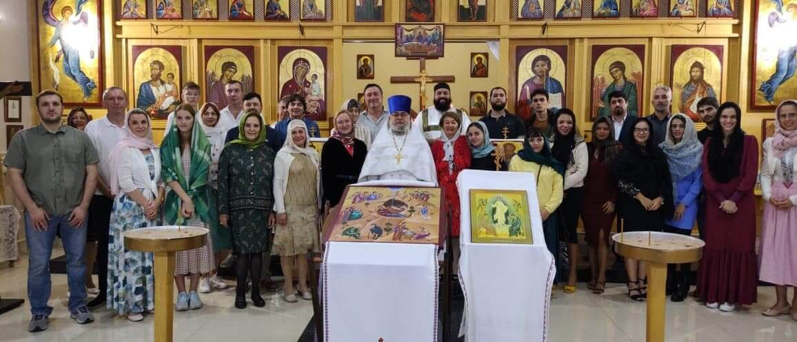

Nobre Nós
Santa Maria do Verdadeiro Caminho é uma pequena paróquia ortodoxa russa localizada em Brasília,
dedicada a preservar e compartilhar as ricas tradições do cristianismo ortodoxo. Nossa
comunidade acolhe todos que buscam crescimento espiritual e uma conexão mais profunda com Deus
por meio de práticas litúrgicas ancestrais.
Nossa paróquia serve como lar espiritual para cristãos ortodoxos em Brasília e arredores, bem
como para aqueles interessados em aprender sobre a fé ortodoxa. Celebramos a Divina Liturgia
em eslavo eclesiástico e português, preservando as tradições transmitidas de geração em geração.
Convidamos você a se juntar a nós em oração e comunhão enquanto caminhamos juntos no caminho da
salvação.

Eventos da Paróquia

Divina Liturgia
Junte-se a nós todos os domingos para a Divina Liturgia, o culto central da Igreja Ortodoxa.
Todo Domingo
10:00
Ágape
Após a Divina Liturgia, junte-se a nós para um café e comunhão enquanto compartilhamos uma refeição juntos, na tradição da Igreja primitiva.
Todo Domingo
Após a Divina Liturgia (aproximadamente 12h00)
Visitantes são bem-vindos
Todos são bem-vindos para visitar nossa igreja durante os cultos da Divina Liturgia. Os cultos acontecem todos os domingos às 10h. Seja você ortodoxo ou simplesmente curioso sobre nossa fé, convidamos você a vivenciar a beleza do culto ortodoxo.
Como Fazer Parte
Paróquia Nossa Senhora do Verdadeiro Caminho
Quadra 104, Conjunto 1, Lote 1, Bloco A - Setor de Mansões Park Way, Brasília - DF, 71705-000
Divina Liturgia de Domingo: 10:00 da manhã
(61) 9 9999-9999